1、进入 控制面板-->设备和打印机
2、选中要打印的打印机,点击打印机服务器属性
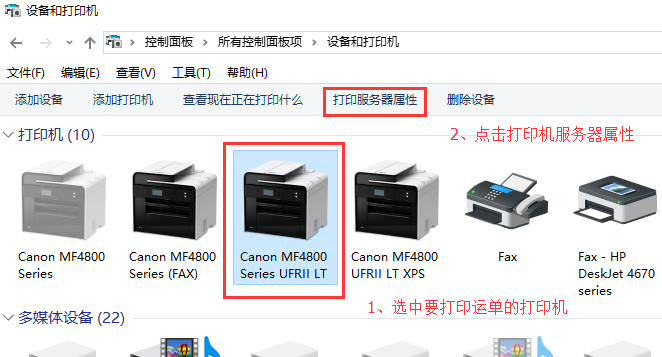
3、创建新的纸张规格 AIR WAY
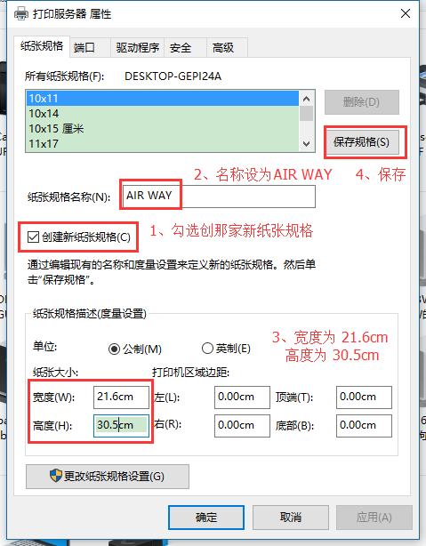
4、选中打印机,并右键点击 打印机首选项
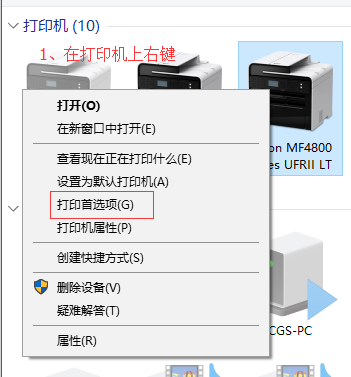
5、将页面大小选择为 AIR WAY
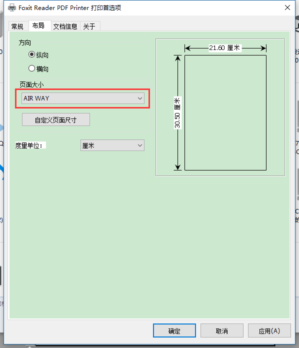
方法一：修改IE浏览器安检设置
1、点击设置图标 或者 工具 在菜单中点击 Internet 选项
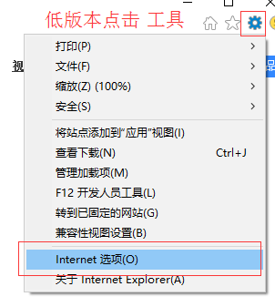
2、选中安全 选项卡，点击 自定认级别
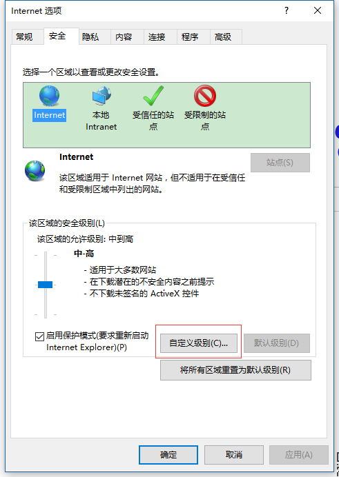
3、启用 对未标记为可安全执行脚本的ActiveX控件初始化并执行脚本 以及 下载未签名的ActiveX控制
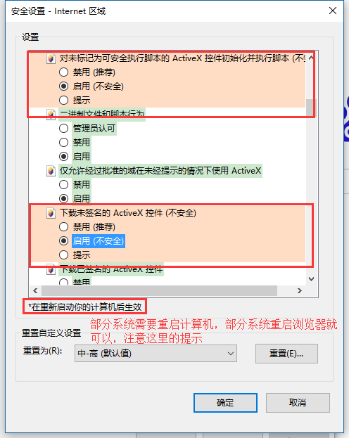
4、禁用 允许ActiveX筛选 (注：如果没有这一项可以不设置)
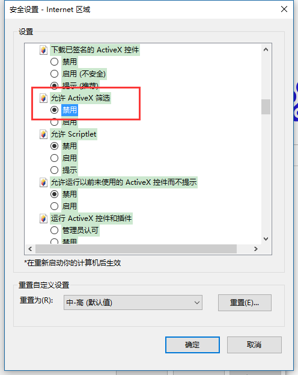
方法二：修改系统注册表
1、运行 regedit
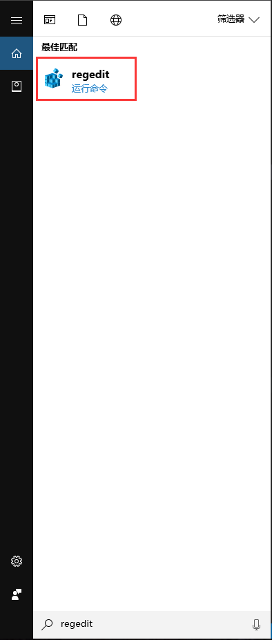
2、找到以下路径 HKEY_CURRENT_USER\SOFTWARE\Microsoft\Internet Explorer\PageSetup 并将页边距都设置为0
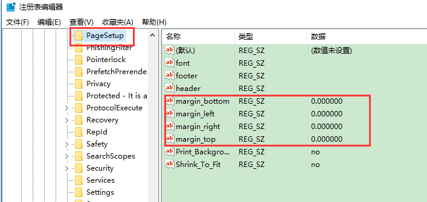
设置最小字体
1、点击 最右边的三个小圆点 在菜单中点击 设置
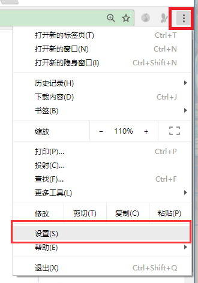
2、找到自定义字体,并点击
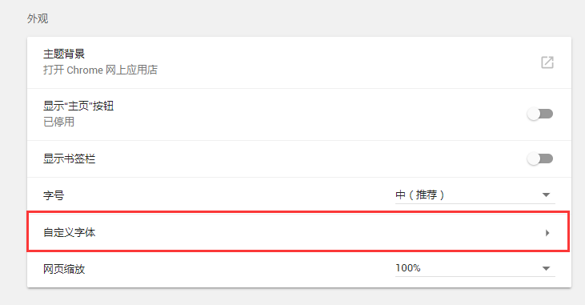
3、将最小字号设置为6px
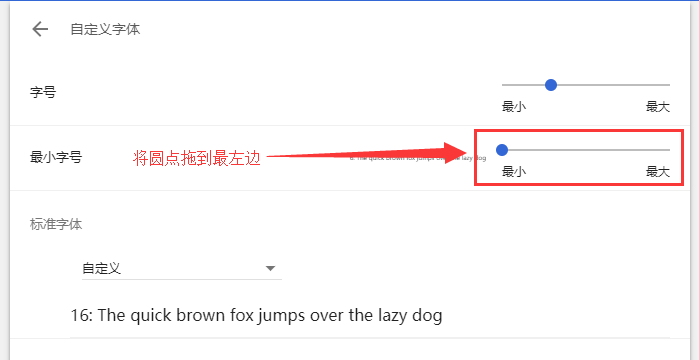
设置打印预览
1、在打印预览中点 更多设置
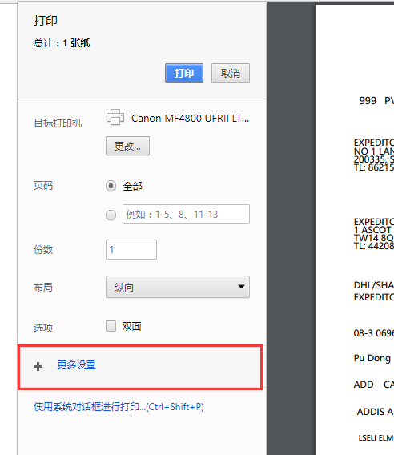
2、将纸张尺寸设置为 AIR WAY 边距设置为 无
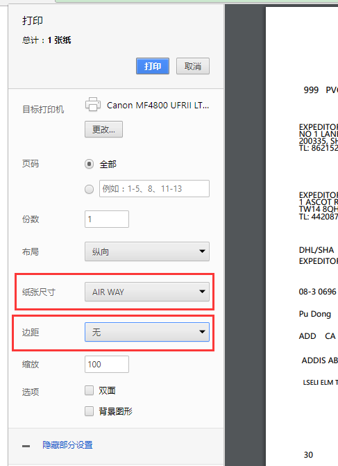